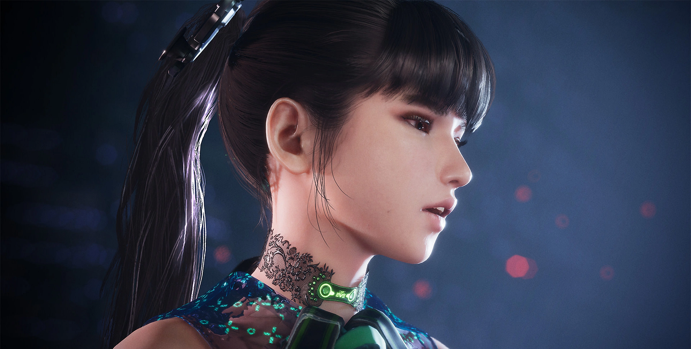

RECONQUISTE A TERRA PARA A HUMANIDADE
O futuro da humanidade está em jogo em Stellar Blade, uma aventura de ação inédita com foco em narrativa no PlayStation®5.
A Terra foi devastada por criaturas estranhas poderosas e os sobreviventes da raça humana fugiram para uma colônia no espaço sideral.
pós deixar a Colônia, EVE, membro do 7º Esquadrão Aéreo, chega às ruínas desoladas do nosso planeta com uma missão muito clara: reconquistar a Terra para salvar a humanidade dos Naytibas, a força malevolente responsável pela devastação do planeta.
Mas conforme EVE confronta os Naytibas um a um e desvenda os mistérios do passado escondidos nas ruínas da civilização humana, ela percebe que essa missão é muito mais complicada. Na verdade, quase nada é o que parece...
Sobre a protagonista
EVE
Originária de um mundo externo chamado Colônia, onde a raça humana se refugia, EVE chega à Terra de forma desastrosa. Quando um membro do 7o Esquadrão Aéreo começa sua operação para reconquistar o planeta das garras dos Naytibas, um ataque surpresa impiedoso destrói sua unidade.
Mesmo com poucas chances de sobreviver, EVE é salva por um coletor chamado Adam, que a guia através de Xion, a única cidade que restou na Terra.
Com a ajuda de Adam, e mais tarde da engenheira Lily, EVE promete continuar sua missão e eliminar completamente os Naytibas.
Chamada de "Anjo" pelos sobreviventes de Xion, EVE explora o território traiçoeiro e a cada passo descobre uma nova surpresa. Ao longo de sua trajetória, fica cada vez mais claro que ela está envolvida em algo muito maior que uma batalha contra uma força inimiga poderosa… Todos os seus valores e crenças estão prestes a ser questionados.